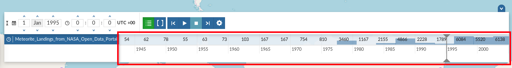
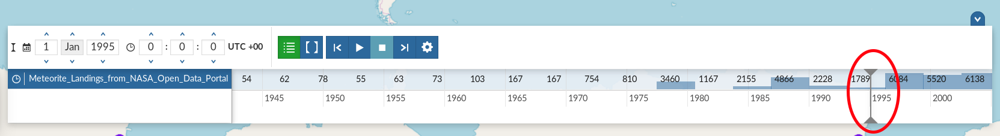

Timeline¶
Warning
Timeline actually works only with WMTS-Multidim extension (WMS time in capabilities is not fully supported).
When loading a temporal layer into the map, the Timeline opens automatically.
The Timeline
On the left side of the Timeline panel you can set the time value in which you want to observe the data. You can type it directly filling out the corresponding input fields or by using the up/down arrows.
The Time Control Buttons
{kind=link}
{kind=link}
{kind=link}
{kind=link}
The Animation Control Buttons
The Timeline panel can be expanded through the button.
{kind=link}
The Expanded Timeline
The expanded section of the Timeline panel contains the Time Layers List and an Histogram which shows you:
the distribution of the data over time
The Timeline Histogram
the Time Cursor
The Time Cursor
You can show/hide the layers list by clicking  (it is active by default).
(it is active by default).
Through the Time Range function you can observe the data in a finite temporal interval.
Click on  and set the initial and the final times to use it.
and set the initial and the final times to use it.
The Time Range Settings
Animations¶
By clicking on  you can manage some Animation Settings.
you can manage some Animation Settings.
{kind=link}
The Timeline Settings
The Animation Range option lets you to define a temporal range within which the time cursor can move. See the following gif to better understand how the Animation works or take a look at the MapStore Documentation.
{kind=link}
The Timeline Animation